安心が、すべてのはじまり。
保育担当制で、受容的・応答的な関わりの中で安心して過ごせるように。 基本的な生活習慣の定着と、信頼関係づくりを大切にします。
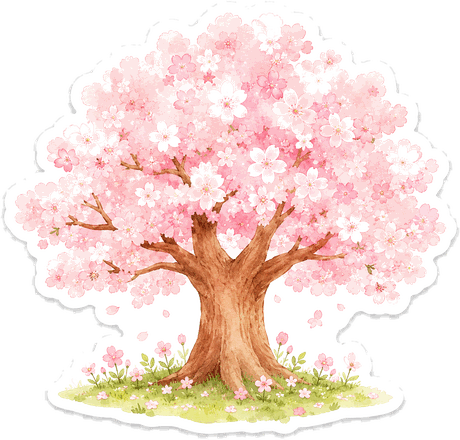
About Us
1980年の開園から、貝塚市久保の地で子どもたちの成長を見守ってきました。 ひさほ保育園が大切にしている考え方と、毎日の保育をご紹介します。
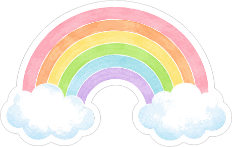
子どもたちが自分の力で歩いていけるように。日々の保育で大切にしている4つの願いです。
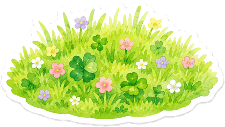
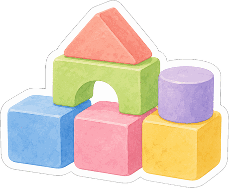
年齢ごとの発達段階に合わせながら、異年齢が交わる「たてわり保育」も取り入れた ハイブリッド保育を行っています。
保育担当制で、受容的・応答的な関わりの中で安心して過ごせるように。 基本的な生活習慣の定着と、信頼関係づくりを大切にします。
自己表現とお友だちへの理解、その両方を育てます。 ルール遊びを楽しみながら、決まりの大切さに気づく気持ちを育みます。
たてわり保育で異年齢との交流を深め、年上への憧れ、年下への思いやりを育成。 自ら考えて行動する力を伸ばします。
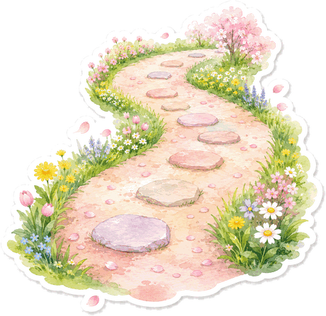
ナビゲーションにいる6匹の動物たちは、それぞれのクラスのマスコットです。
 ひよこ組0歳児
ひよこ組0歳児 ぱんだ組1歳児
ぱんだ組1歳児 りす組2歳児
りす組2歳児 うさぎ組3歳児
うさぎ組3歳児 きりん組4歳児
きりん組4歳児 らいおん組5歳児
らいおん組5歳児専門講師による指導を日々の保育に取り入れています。設定保育は園の負担で、対象の園児全員が参加します。
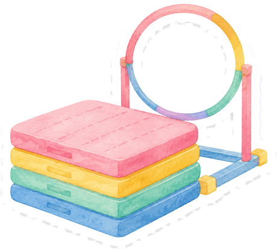
設定保育・園負担跳び箱・マット・鉄棒などを通して、専門指導員とともに脚力、跳躍力、瞬発力などバランスのとれた運動能力を伸ばします。
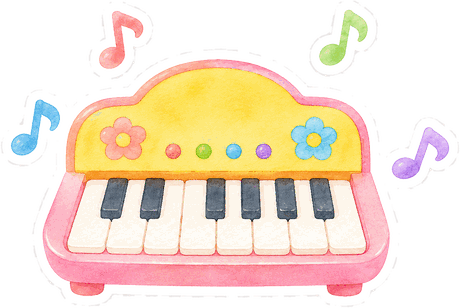
設定保育・園負担歌唱と楽器演奏の指導を行い、合奏を通じて協調性や社会性を育みます。
心地よい音楽を聴きながら身体を動かして気持ちを表現。すべての年齢の子どもがリラックスして参加できます。
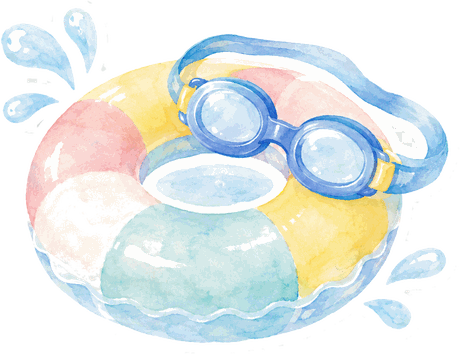
課外保育・希望制尾崎スイミングスクールの専門カリキュラムによる本格的なレッスンで、体力と自信を育てます。
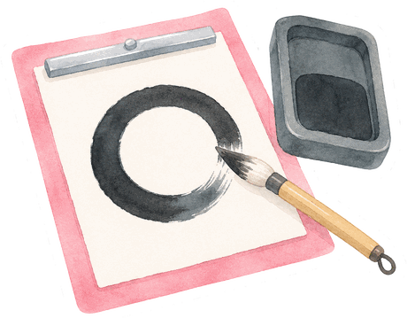
課外保育・希望制礼儀や姿勢、集中力、文字の習得をねらいとした、書道講師による指導を行っています。
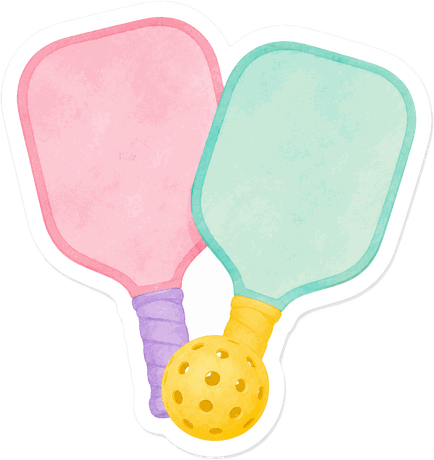
新しい取り組みラケットとボールで楽しむ、みんなが同じスタートラインに立てる新しいスポーツ。園に用具を導入しました。
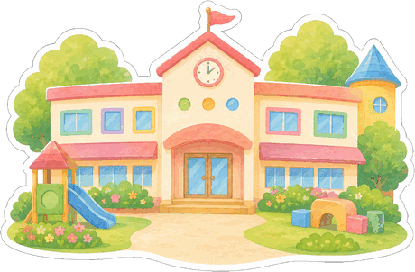
運動場と2つのテラスがあり、体をのびのび動かせる園舎です。